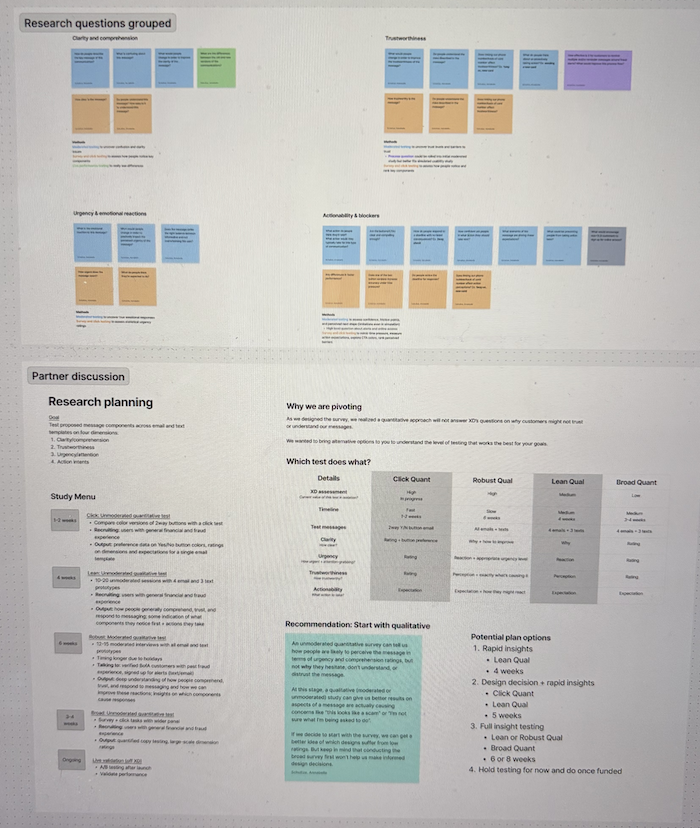

Bank Messaging
Rebuilding trust in fraud and scam alerts across platforms.
Context
Fraud and scams cost people billions annually. With 30+ fraud communication types, it was time to standardize our approach in order to increase message credibility and customer engagement.
Business Goal
Increase digital customer engagement to lower call volume and prevent fraud + scam losses.
Research Goal
Understand what drives customer trust in our messages.
Impact
The team will pursue a partnership to improve sender verification.
The strategy I defined centers around consistent branding, scam education, and providing multiple secure paths with reassurance.
Constraints
- Limited time and budget for project scope
- Could not run live A/B experiments which impacted situational accuracy
Approach

Alignment workshop: defining four message dimensions and study menu optionsAfter stakeholder interviews, I pitched a new research approach to identify what actually drives trust. We aligned on:
Click test: Test two design versions using a 30s time limit with 600 digitally active users across varying scam awareness levels.
This variance helped us understand how threat perception affects message interpretation.
Lean think-aloud study: Foundational behavioral research with 70 customers, recruiting equal splits of mobile and web users with mixed scam experience to uncover patterns across platforms.
Key Findings
Click test results revealed critical insights about behavior under pressure
Button design didn't affect accuracy (50% vs. 51.8%) or speed across versions, enabling a confident design decision.
However, the low accuracy and 21-27% of user clicks on incorrect CTAs formed a behavioral hypothesis: Users struggle to identify their expected action in urgent situations.
Trust is the foundation of message performance
I identified key trust signals that influence whether users engage with messages. One signal (scam warnings and education) proved unexpectedly powerful and easy to implement.One participant captured this perfectly:
A scammer wouldn't tell you that.
I outlined which messages warrant additional context by outlining situations where customers are less likely to trust or act on a message.
Impact
This research provided a comprehensive suite of design recommendations for
Reflection
If I were to do this project again, I would set out to define the dimensions of a successful communication earlier.